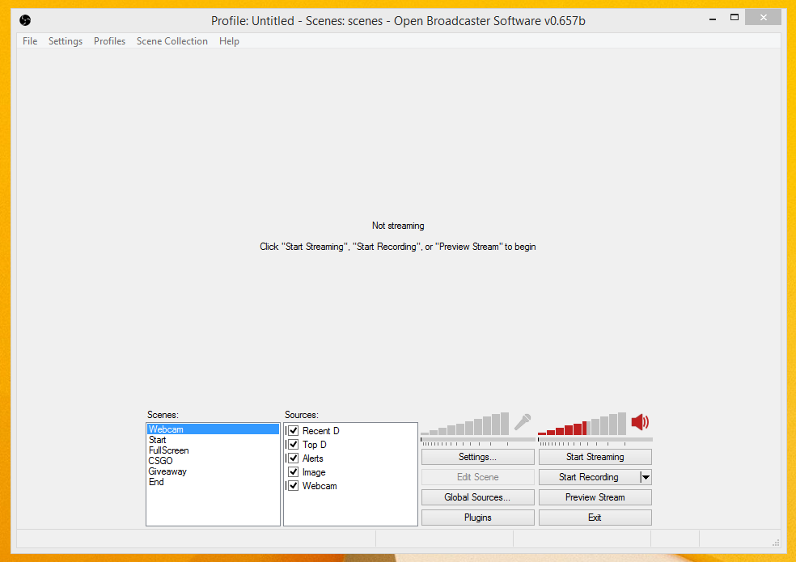

Congratulations! If you have made it this far, you know how to download software and we can assume the rest of this will go very smoothly! Double click on the OBS icon to start the program.
Click settings.
After you have opened the Settings window, we will begin to adjust the necessary settings.
If you are an English speaker, there is no reason to adjust any settings on this tab, leave them default. If you are a non-English speaker, change the Language drop-down-menu to your spoken language.
Navigate to the Encoding tab.
The encoding tab is where you set the bitrate for your stream. I recommend using x264 encoding if you have an Intel i7 processor of similar. I will make a recommendation of 2000 Max Bitrate as well as a Buffer Size of 2400+ to achieve a fantastic quality of stream at 720p and 30 FPS.
You can also set your audio encoding here. I recommend setting the bitrate to 128 and you can check what your Format should be by right clicking the audio icon on your desktop taskbar and selecting recording devices. Then right click your Microphone and select properties. Under the advanced tab of your microphone properties, you can see what the default format is.
Navigate to the Broadcast Settings Tab
Your Broadcast Settings tab will have to be set up correctly. Use the same settings I have below to achieve the best results. You will want to change your FMS URL to the location nearest you. To get your Play Path/Stream Key, you must have a twitch.tv account. Click the link below and navigate to the Stream Key tab to find your Play Path/Stream Key.
Stream KeyNavigate to the Video Tab
The Video tab should be set up similar to what I have below for best results unless you are capturing in a resolution lower/higher than 1920x1080. Unfortunately, streamers who are not partnered by twitch will be limited to 720p video at the highest for 30 FPS playback. You can achieve 60 FPS at 480p or lower, but the quality is so low it is not worth it for the 60 FPS. Try the settings I have below.
Navigate to the Audio Tab
The Audio tab requires you to chose your desktop audio device and your microphone. Use the drop-down-menus to select your respective devices.
Navigate to the Hoykeys Tab
For the beginning streamer, there is not much use for the hotkeys tab. Feel free to create hotkeys of your choosing. Personally, I chose not to have mic push to talk or mute buttons. I like to have my mic on at all times while I am streaming because most viewers love to interact and hear the streamer speaking.
Navigate to the Advanced Tab
This is the last tab we will cover on Twitch Haven. It is also not recommended to change any of the settings on this tab unless you are an advanced user. Below I will demonstrate my advanced settings.
Let's see if we can set a scene and begin Getting Started.